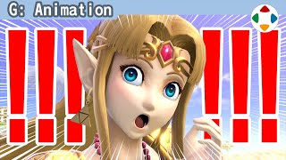
速览
Facial 就是表情。《大乱斗 特别版》角色小、看不清，但表情也做得很认真。先以塞尔达为例看看各种表情：她不算有冲劲的类型，但也有很多表情。本作不需要口型同步或微妙的表情变化，所以整体想做得有活力。开发中会在做模型前用绘画修图定方针，但交上来的图大多是很小的表情变化。这是当时狼的受伤脸：这样也不是不成立，但他修图要求「努力到这个程度」的是这张——从狼等的下颌结构来说，这么强才合理吧。从自己觉得努力了的程度再更大幅地动比较好。睁大眼睛时尽量上下都露出眼白、上下门牙不要咬合等，有几个容易卡住的要点，但因游戏目标完全不同，就不展开了。最前沿的游戏，表现力已提升到能从细微表情差异读出情感；写实系和喜剧系要做的事不同，但 CG 信息容易减少，所以夸张才刚好吧。顺便，机器人那样的表情也是 Facial。史蒂夫唯一的表情是眨眼，只能用动作弥补，但这里以原作风格优先。
1. 认真做表情 0:04
Facial 就是表情。《大乱斗 特别版》角色小、看不清，但表情也做得很认真。
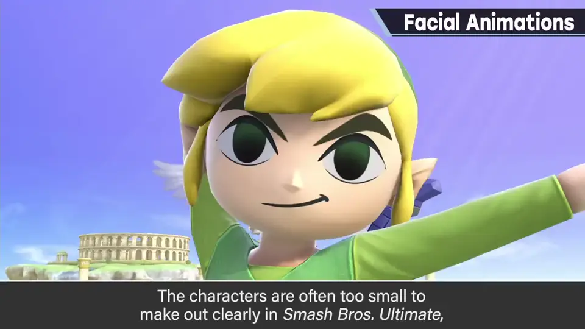
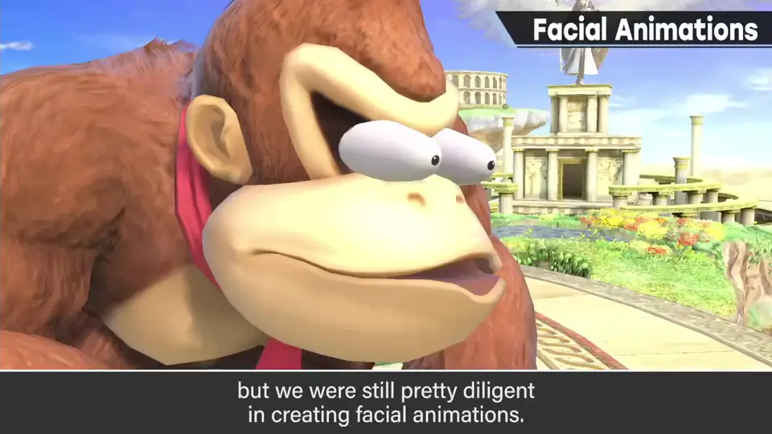
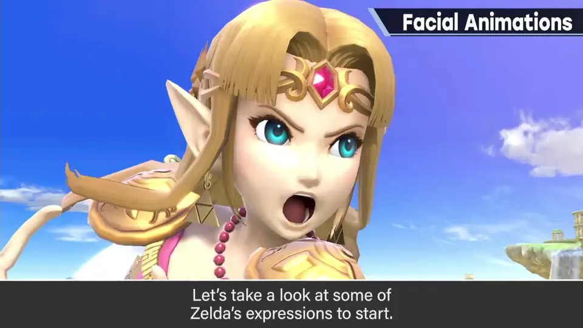
先以塞尔达为例看看各种表情：她不算有冲劲的类型，但也有很多表情。
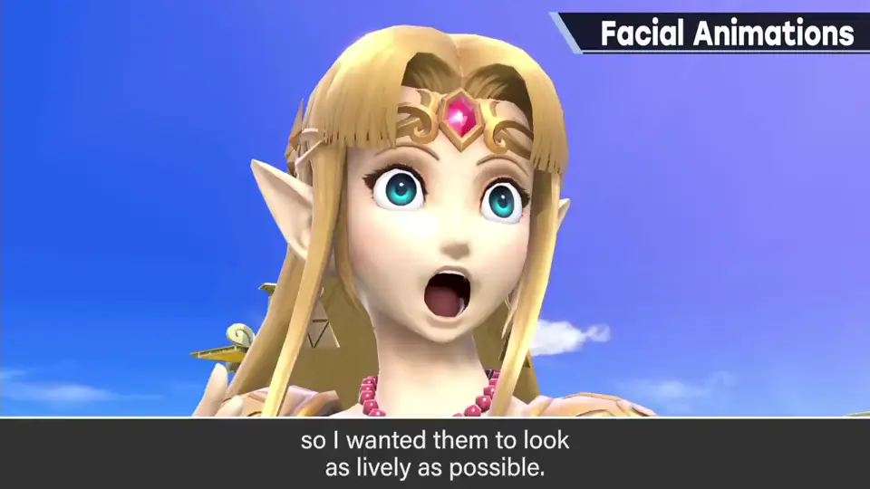
2. 用修图定方针 0:40
开发中会在做模型前用绘画修图定方针，但交上来的图大多是很小的表情变化。
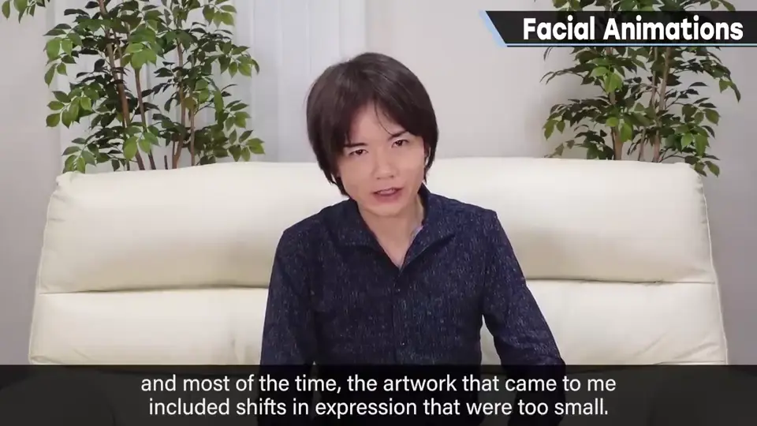
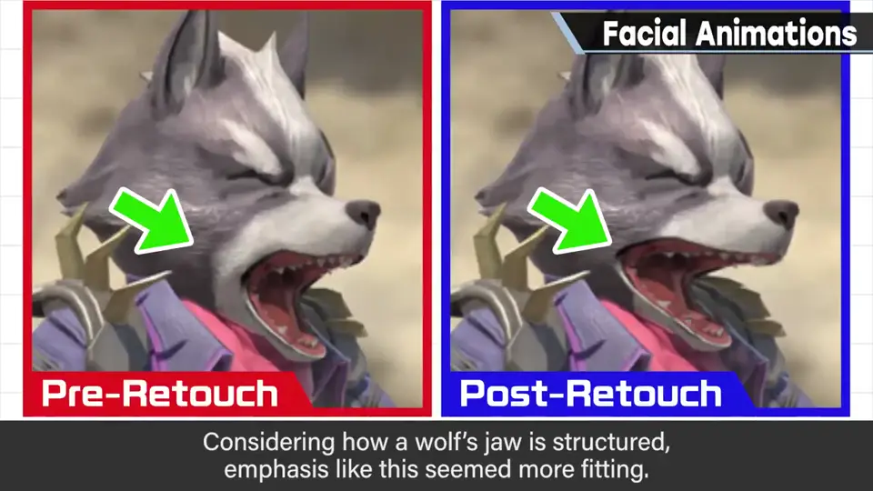
这是当时狼的受伤脸：这样也不是不成立，但他修图要求「努力到这个程度」的是这张。
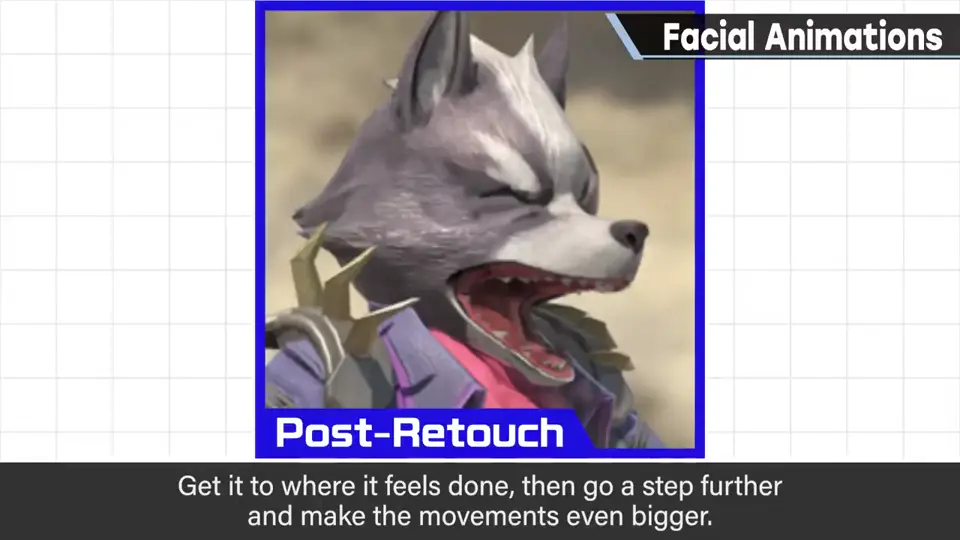
3. 容易卡住的要点 1:15
- 睁大眼睛时，尽量上下都露出眼白。
- 上下门牙不要咬合。
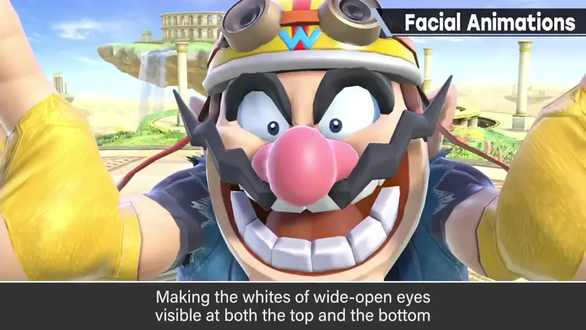
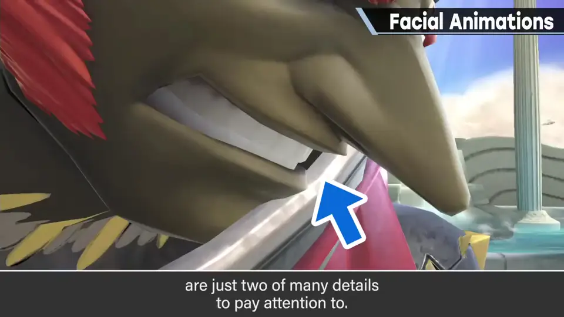
还有几个要点，但因游戏目标完全不同，就不展开了。
4. CG 中夸张才刚好 1:36
最前沿的游戏，表现力已提升到能从细微表情差异读出情感。
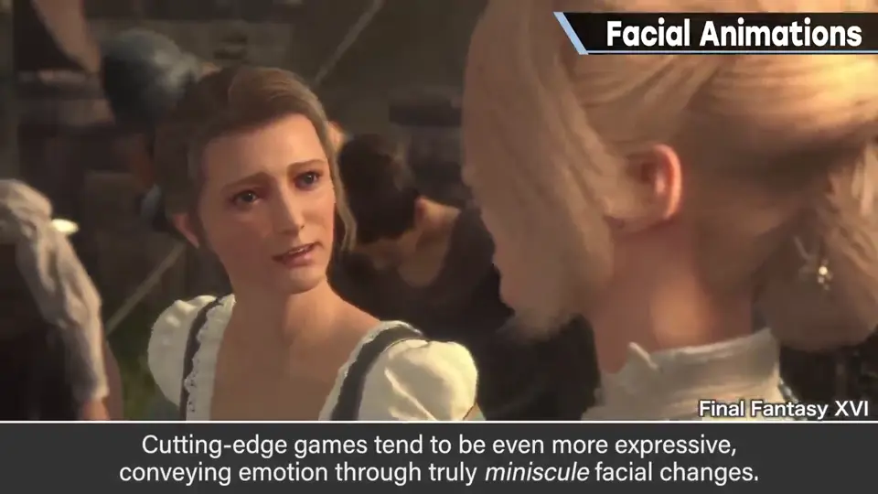
5. 机器人与史蒂夫 1:52
顺便，机器人那样的表情也是 Facial。
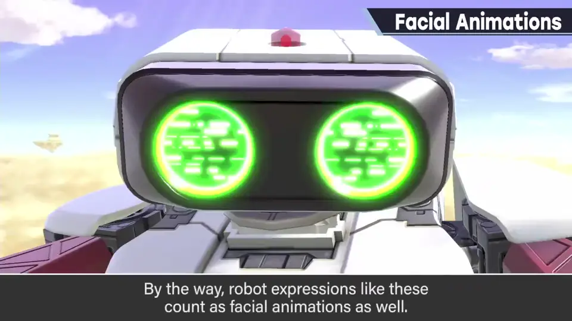
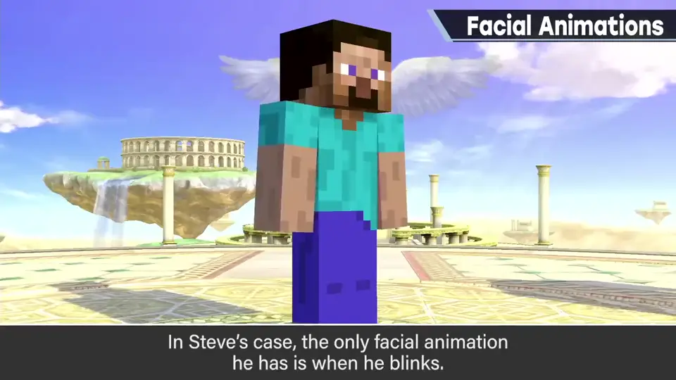
史蒂夫唯一的表情是眨眼，只能用动作弥补；但这里以原作风格优先。
自测题
1. 《特别版》的表情方针是什么？
不需要口型同步与细微变化，整体要有活力、夸张。 0:36
2. 狼的受伤脸修图说明了什么？
交上来的变化太小；觉得努力了再更大幅地动才对。 1:06
3. 举两个表情的易错点。
睁眼时上下都露眼白；上下门牙不咬合。 1:20